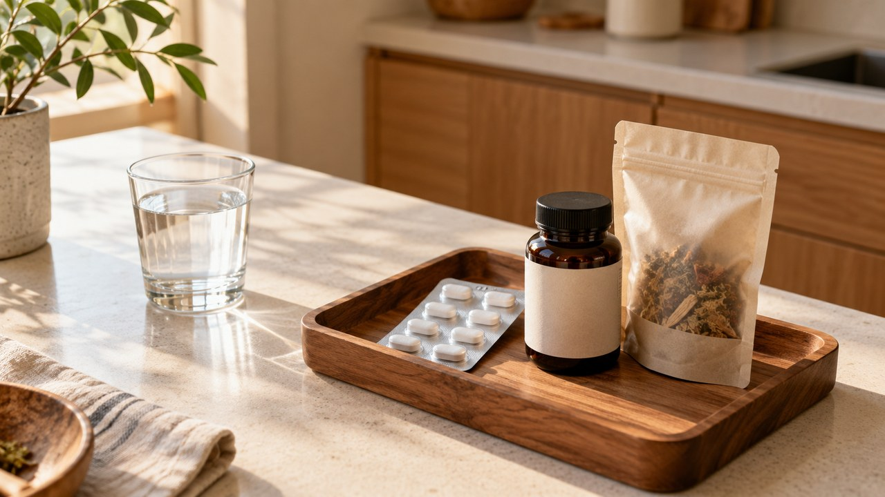

정상 성인의 하루 소변 단백질 배설량은 150 mg 미만이며, 하루 150 mg 이상이거나 소변 알부민/크레아티닌 비율이 30 mg/g 이상인 상태가 3개월 이상 지속되면 사구체여과율이 60 mL/분/1.73m² 이상이어도 만성콩팥병으로 진단합니다. 고기를 무작정 끊기보다 하루 총 소금 5 g 미만 제한과 신기능·영양 상태에 맞춘 단백질(0.6~0.8 g/kg) 조절 및 충분한 열량 보충이 필요합니다.
건강검진 소변검사에서 단백뇨 양성이 나와 아침 첫 소변으로 재검사를 받았는데도 다시 단백뇨가 검출되면 덜컥 겁이 나기 마련입니다. 특히 혈액검사 결과지에 적힌 사구체여과율(eGFR)이 60 또는 90 이상인데 왜 소변에서는 계속 단백질이 빠져나오는지 혼란스러워하는 분들이 많습니다.
2022년 건강검진 수검자 17,142,575명 가운데 요시험지봉 검사 1+(약 30 mg/dL)는 822,890명, 2+(100 mg/dL)는 121,095명, 3+(300 mg/dL)는 37,892명, 4+(1,000 mg/dL 이상)는 9,736명에서 발견되었습니다. 2023년 기준 알부민뇨와 사구체여과율을 함께 고려한 국내 중등도 이상 만성콩팥병 유병률은 전체 인구의 7.7%(남성 8.3%, 여성 7.2%)에 달합니다.
사구체여과율이 60 이상이어도 단백뇨가 계속 나오는 구조적 이유부터 변기 거품과 오목부종 징후, 놓치기 쉬운 지속성 단백뇨의 원인 3가지, 그리고 신기능 단계별로 근육 손실 없이 콩팥을 지키는 저염·단백질 식단과 약물 치료 기준까지 차례대로 짚어봅니다.
변기 거품과 저녁 양말 자국, 일시적 현상 아닌 진짜 지속성 단백뇨는 어떻게 구별하나요?

소변에 단백질이 섞여 나오는 단백뇨는 크게 일과성 단백뇨, 기립성 단백뇨, 그리고 지속성 단백뇨로 나뉩니다. 발열이나 격렬한 운동, 수면 무호흡증, 심한 스트레스 뒤에 한 번 나타났다가 사라지는 일과성 단백뇨나, 30세 이하 젊은 층에서 오래 서 있을 때만 나타나는 기립성 단백뇨는 대부분 경과가 양호합니다.
처음 소변검사에서 1+ 판정을 받았을 때 운동과 탈수 등 일시적 요인을 배제하고 정확히 다시 검사하는 준비 과정은 소변검사 단백뇨 1+ 판독과 거품뇨 구별 및 재검 전 아침 수칙 ↗ 글에서 먼저 확인하실 수 있습니다. 문제는 이러한 일시적 원인을 모두 피하고 반복 검사를 했는데도 계속 단백뇨가 나오는 지속성 단백뇨입니다.
소변으로 빠져나가는 단백질 양이 늘어날수록 물의 표면장력이 변하면서 맥주 거품처럼 작고 촘촘한 거품이 생기고, 양변기 물을 내려도 거품이 쉽게 사라지지 않은 채 남아있게 됩니다. 또한 혈액 속 단백질(특히 알부민)이 소변으로 계속 빠져나가면 혈관 안으로 수분을 끌어당기는 삼투압이 떨어져 혈관 밖 조직으로 수분이 빠져나갑니다.
이 때문에 아침에 일어나면 눈 주위와 얼굴이 푸석하게 붓고, 저녁에는 양말 고무줄 자국이 깊게 패이거나 신발이 꽉 끼는 증상이 나타납니다. 부종은 보통 양쪽 다리에 함께 나타나며 양쪽 발등에서 시작해 발목, 정강이, 허벅지 순으로 위쪽으로 올라오는데, 손가락으로 눌렀을 때 움푹 들어간 자국이 한동안 돌아오지 않는 오목부종 형태를 보입니다.
특히 일회 소변 단백질/크레아티닌 비율(UPCR)이 3.5 g/g 이상이면서 심한 부종과 저알부민혈증, 고지혈증이 동반되면 신증후군으로 진단합니다. 이 단계에서는 체중이 갑자기 늘고 거품뇨가 뚜렷해지므로 지체 없이 신장내과 정밀 진료를 받아야 합니다.
사구체여과율(eGFR)이 60 이상인데도 왜 단백뇨가 계속 나오고 만성콩팥병으로 진단될까요?
우리 몸의 양쪽 콩팥에는 각각 약 100만 개씩, 합쳐서 200만 개 이상의 네프론이라는 미세 필터 조직이 존재합니다. 사구체는 심장에서 뿜어내는 혈액(심박출량)의 약 20%를 받아 하루에 180 리터에 달하는 방대한 혈액을 걸러내는 역할을 수행합니다.
사구체를 이루는 모세혈관 벽에는 아주 작은 미세 여과 구멍이 있어, 노폐물은 통과시키되 몸에 꼭 필요한 혈장 단백질은 빠져나가지 못하게 막아줍니다. 사구체여과율(eGFR)이 전체 콩팥이 노폐물을 걸러내는 총속도를 뜻한다면, 단백뇨는 바로 이 미세한 여과막 그물망이 손상되었음을 알리는 구조적 지표입니다.
콩팥 손상 초기에는 일부 사구체 여과막이 헐거워져 단백질이 새어 나오고 변기 거품이 계속 남더라도, 남아있는 네프론들이 평소보다 더 많은 혈액을 여과하며 전체 속도를 보완합니다. 그래서 혈액검사 사구체여과율이 젊은 성인 정상 기준인 90 mL/분/1.73m² 이상(G1단계)이나 경도 감소 구간인 60~89 mL/분/1.73m²(G2단계)로 유지되더라도, 단백뇨나 혈뇨 등 손상 근거가 3개월 이상 지속되면 만성콩팥병으로 진단합니다.
정상 성인의 24시간 요단백 배설량은 150 mg 이하로, 여과된 혈장 단백이 약 40%(알부민 20~40 mg), 요세관에서 분비되는 점액단백이 40%, 면역글로불린이 15%, 기타 혈장 단백 및 효소가 5%를 차지합니다.
병원에서는 24시간 소변을 모두 모으는 번거로움을 줄이기 위해 일회 소변에서 단백/크레아티닌 비율(UPCR)이나 알부민/크레아티닌 비율(uACR)을 측정하며, 비율이 1,000 mg/g이면 체표면적 1.73 m² 기준 하루 1,000 mg(1 g)의 단백뇨가 나오는 것으로 추정합니다.
특히 당뇨병이나 고혈압에 의한 초기 콩팥 손상인 미세알부민뇨(24시간 소변 알부민 30~300 mg 또는 일회 소변 알부민/크레아티닌 비율 30~300 mg/g)는 일반 건강검진의 요시험지봉 검사로는 검출되지 않습니다. 따라서 공복혈당이 높거나 당뇨병이 있는 분들은 일반 소변검사가 음성이라도 매년 1회 이상 알부민뇨 정량 검사를 챙겨야 하며, 혈당 관리 기준은 건강검진 공복혈당과 당화혈색소 확인 기준 및 식사·운동 관리법 ↗ 글에서 자세히 보실 수 있습니다.
| 정량 검사 및 평가 지표 | 정상·기준 구간 | 경도·주의 구간 | 중등도~중증 관리 구간 |
|---|---|---|---|
| 24시간 총 요단백 및 UPCR | 하루 150 mg 미만 (알부민 20~40 mg 포함) | 하루 150 mg 이상 지속 시 임상적 단백뇨 판정 | UPCR 3.5 g/g 이상 및 부종·저알부민혈증 동반 시 신증후군 |
| 알부민뇨 3단계 (uACR, A1~A3) | A1(1단계): 30 mg/g 미만 (정상~경도 증가) | A2(2단계): 30~300 mg/g (미세알부민뇨, 일반 시험지봉 미검출) | A3(3단계): 300 mg/g 이상 (현성 알부민뇨 및 사구체 손상 진행) |
| 사구체여과율 6단계 (eGFR, G1~G5) | G1(1단계): 90 이상 (단백뇨 3개월 지속 시 만성콩팥병 1단계) | G2(2단계): 60~89 경도 감소 (단백뇨·혈뇨 3개월 지속 시 만성콩팥병 2단계) | G3a(45~59), G3b(30~44), G4(15~29), G5(15 미만) |
놓치기 쉬운 지속성 단백뇨의 병적 원인 3가지(사구체·요세관·과다유출)는 무엇인가요?

지속성 단백뇨는 사구체 여과막 손상으로 하루 1~2 g 이상 배출되는 사구체성 단백뇨, 작은 단백질이 재흡수되지 못해 하루 1 g 미만으로 나오는 요세관성 단백뇨, 체내 비정상 단백질이 과다 생성되는 과다유출 단백뇨의 3가지 원인으로 구분합니다. 어떤 경로에서 단백질이 새는지 파악해야 정확한 치료 방향을 세울 수 있습니다.
첫 번째 원인인 사구체성 단백뇨는 사구체 여과막 자체가 손상되어 알부민 같은 혈장 단백질이 대량으로 빠져나오는 상태로, 24시간 소변 단백 정량검사에서 보통 1~2 g 이상 검출될 때 가능성이 높습니다. 국내 일차성 사구체 질환 중 가장 흔한 원인은 전체의 약 48%를 차지하는 IgA 신장염으로, 목감기 등 상기도 감염을 앓은 뒤 2~3일 내에 콜라색 혈뇨와 단백뇨가 나타나는 특징이 있습니다.
장기 경과 보고에서 IgA 신장염은 20년 내에 30%가, 막성 사구체신염은 10년 내에 약 20%가 말기 신부전으로 진행할 수 있으며, 이차성 사구체 질환으로는 루푸스 신염(약 32%)과 당뇨병성 신병증(장기 경과에서 10년 내 60% 정도 진행 보고), 고혈압성 신병증이 대표적입니다. 다만 이는 전체 환자군에 대한 과거 관찰 통계이므로 조기 발견 시점과 혈압·혈당·약물 치료 반응에 따라 개인별 실제 경과는 크게 달라집니다.
두 번째 원인인 요세관성 단백뇨는 사구체 여과막을 통과한 아주 작은 단백질(베타2-미세글로불린, 면역글로불린 경쇄, 리소자임, 아미노산 등)이 요세관에서 다시 흡수되지 못하고 소변으로 배출되는 경우입니다. 보통 24시간 소변 단백량이 1 g 미만으로 나타나며, 습관적으로 복용하는 소염진통제나 콩팥에 좋다며 마시는 고농축 추출물(건강즙·달인 물), 신독성 항생제 등이 요세관과 콩팥 손상을 일으키는 흔한 요인이 됩니다.
세 번째 원인인 과다유출 단백뇨는 콩팥의 사구체나 요세관 자체에는 문제가 없지만, 몸 안에서 특정 저분자 단백질이 비정상적으로 과다 생성되어 소변으로 넘쳐 나오는 상태입니다. 면역글로불린이 급증하는 다발성골수종, 근육이 파괴되며 미오글로불린이 쏟아져 나오는 횡문근융해증, 적혈구가 깨지며 혈색소가 나오는 용혈 질환이 이에 해당합니다.
단백뇨 나왔다고 고기부터 완전히 끊으면 왜 위험할까요? 소금 5g과 단백질 0.6~0.8g/kg 식단 수칙

지속성 단백뇨 판정을 받은 분들이 가장 많이 저지르는 실수는 소변으로 단백질이 빠져나간다고 해서 고기, 생선, 달걀, 두부 같은 단백질 반찬을 식탁에서 완전히 없애거나 반대로 단백질을 보충한다며 고단백 식품을 과식하는 것입니다. 탄수화물과 지방은 분해되면 물과 이산화탄소가 되어 호흡이나 땀으로 쉽게 배출되지만, 단백질의 분해 산물인 질소 노폐물은 오직 콩팥을 통해서만 소변으로 제거됩니다.
콩팥 부담을 줄이기 위해 하루 총 소금 섭취를 5 g 미만으로 제한하고, 신기능 저하 단계와 영양 상태에 따라 하루 단백질 섭취를 체중 kg당 0.6~0.8 g 미만으로 조절하되 근육 분해와 영양 결핍을 막기 위해 개인별 영양 평가에 맞춘 충분한 열량 섭취가 권고됩니다.
사구체여과율이 보존된 초기에는 무리한 단백질 제한보다 고단백 보충제나 과식을 피하는 것이 우선이며, 만성콩팥병이 진행될수록 개인별 대사 상태와 영양 평가에 따라 단백질과 열량 목표치를 세밀하게 설정합니다. 만약 단백질을 줄이면서 식사량까지 부족해지면, 우리 몸은 에너지를 얻기 위해 스스로의 근육 단백질을 분해하여 오히려 요독 부담과 근감소증이 악화됩니다.
또한 짠 음식은 체내 수분을 끌어당겨 혈압과 사구체 내부 압력을 높이고 단백뇨 감소 약물의 효과까지 떨어뜨리므로 하루 전체 식사의 총 소금 섭취를 5 g 미만으로 철저히 줄여야 합니다. 콩팥 기능이 점차 저하되는 단계에서 과일이나 채소의 칼륨을 안전하게 조절하는 조리법은 신장에 좋은 음식 오해와 바나나·토마토 칼륨 조절 식단 가이드 ↗ 글을 함께 참고하시기 바랍니다.
지속성 단백뇨 완화와 콩팥 기능 보존을 위한 일상 식단·생활 수칙 4가지
- 하루 총 소금 5 g 미만 저염 식사: 국이나 찌개 국물 대신 건더기 위주로 식사하고 김치·젓갈·가공식품을 줄여 하루 전체 식사의 총 소금 섭취량을 5 g 미만으로 유지합니다.
- 신기능·영양 상태별 단백질(0.6~0.8 g/kg) 조절 & 충분한 열량 보충: 단백질을 완전히 끊지 말고 사구체여과율 단계와 개인별 영양 평가에 맞춰 하루 체중 kg당 0.6~0.8 g 미만으로 조절하며, 근손실을 막기 위해 질환 단계와 체중에 맞춘 충분한 열량 목표를 함께 유지합니다.
- 진료실 수축기 혈압 120 mmHg 미만 목표 & 체질량지수 25 kg/m² 미만: 고혈압이 동반된 만성콩팥병에서는 어지럼증 등 부작용 없이 견딜 수 있는 범위 내에서 표준화 진료실 수축기 혈압을 120 mmHg 미만으로 조절하고, 금연과 체질량지수(BMI) 25 kg/m² 미만을 유지합니다.
- 소염진통제 및 고농축 추출물 임의 복용 중단: 콩팥 혈류를 떨어뜨리고 요세관을 손상시키는 소염진통제나 정체불명의 진한 건강즙·달인 물(추출물) 복용을 피합니다.
콩팥 조직검사와 사구체 압력 낮추는 약물 치료는 언제 시작해야 하나요?

2022년 기준 국내 성인의 만성콩팥병 유병률은 7.6%이며 70세 이상에서는 21.6%로 높아지고, 환자 1인당 연간 진료비는 약 849만 원에 이릅니다. 특히 말기 신부전으로 진행해 투석을 받게 되면 5년 생존율이 60%(당뇨병 말기 신부전은 54%) 수준이고 정상인 대비 삶의 질은 75%로 낮아지며 사망 위험은 7.2배 높아지므로, 단백뇨 단계에서 진행을 멈추는 것이 무엇보다 중요합니다.
혈액검사나 콩팥 초음파, 컴퓨터단층촬영(CT)만으로는 사구체 질환의 정확한 종류를 가려내기 어려울 때 콩팥 조직검사를 시행합니다. 조직검사로 얻은 콩팥 조직을 광학현미경, 면역형광현미경, 전자현미경으로 정밀 분석해 진단과 예후를 판정하며, 콩팥은 혈관이 매우 풍부한 장기이므로 출혈 합병증을 예방하기 위해 시술 후 약 6시간 동안 절대안정이 필요합니다.
지속성 단백뇨를 줄이고 콩팥 기능을 보존하기 위해 가장 먼저 사용하는 약물은 레닌-안지오텐신 시스템(RAS) 억제제인 안지오텐신 전환효소 억제제와 안지오텐신 수용체 차단제입니다. 여기에 당뇨병 치료제로 개발된 나트륨-포도당 공동수송체-2(SGLT2) 억제제 역시 사구체 내부의 과도한 압력을 낮추어 단백뇨와 혈압을 줄이는 데 폭넓게 사용됩니다.
예를 들어 원발성 IgA 신장염에서 콩팥 기능이 보존되어 있고 혈압이 정상이며 단백뇨가 하루 1 g 미만이라면, 저염식 등 보존적 관리와 함께 RAS 억제제나 SGLT2 억제제를 복용하며 경과를 관찰합니다. 반면 최대한의 보존적 치료를 3~6개월 이상 꾸준히 유지했음에도 하루 1 g 이상의 단백뇨가 계속 나오거나 콩팥 기능 저하 속도가 빠르다면 스테로이드나 면역억제제 치료를 시작하게 됩니다.
| 지속성 단백뇨 3대 원인 분류 | 24시간 요단백 배출량 특징 | 대표 원인 질환 및 유발 요인 | 핵심 검사 및 치료·관리 원칙 |
|---|---|---|---|
| 사구체성 단백뇨 | 보통 하루 1~2 g 이상 (신증후군은 UPCR 3.5 g/g 이상) | 일차성(IgA 신장염 약 48%, 막성 사구체신염 등), 이차성(루푸스 신염 약 32%, 당뇨병성·고혈압성 신병증) | 콩팥 조직검사(시술 후 약 6시간 절대안정), RAS 억제제·SGLT2 억제제 및 3~6개월 이상 하루 1 g 이상 지속 시 면역억제제 고려 |
| 요세관성 단백뇨 | 대부분 하루 1 g 미만 (저분자 단백 재흡수 장애) | 베타2-미세글로불린·아미노산 등 배출, 소염진통제·추출물(건강즙)·신독성 항생제 등에 의한 요세관 손상 | 신독성 약물·추출물 즉시 중단, 원인 약제 점검 및 저염(하루 총 소금 5 g 미만)·적정 단백 식이 병행 |
| 과다유출 단백뇨 | 체내 과다 생성된 저분자 단백의 소변 유출 | 다발성골수종(면역글로불린 증가), 횡문근융해증(미오글로불린 증가), 용혈(혈색소 증가) | 혈액·소변 단백 전기영동 검사 및 전신 기저 질환에 대한 원인 치료 시행 |
사구체여과율이 60 이상이라는 말에 안심해 반복되는 단백뇨를 방치하면 콩팥의 미세 필터는 소리 없이 망가질 수 있습니다. 오늘부터 하루 전체 식사의 총 소금 섭취량을 5 g 미만으로 줄이고 신장내과 정량 검사를 통해 내 콩팥 단계에 맞는 정확한 관리 기준을 세워보시기 바랍니다.
자주 묻는 질문 (FAQ)
- 1. 질병관리청 국가건강정보포털 (KDCA) — 소변이상(단백뇨): 하루 150mg 단백뇨 및 UPCR 3.5g/g 신증후군 진단 기준, 사구체성·요세관성·과다유출 단백뇨 감별 및 단백/크레아티닌 비율 정량검사 지침 (cntnts_sn=6711)
- 2. 질병관리청 국가건강정보포털 (KDCA) — 만성콩팥병: 사구체여과율 6단계·알부민뇨 3단계 분류 및 하루 소금 5g 미만·단백질 0.6~0.8g/kg·열량 조절 식이요법 기준 (cntnts_sn=5457)
- 3. 질병관리청 국가건강정보포털 (KDCA) — 사구체질환: 일차성(IgA 신장염 48%)·이차성 사구체신염 역학 및 RAS 억제제·SGLT2 억제제·면역억제제 치료 기준 (cntnts_sn=6541)
독자 댓글 (0)